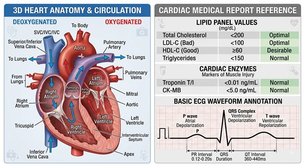
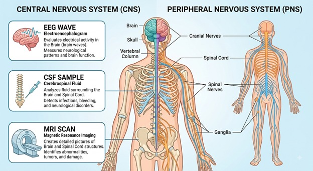

01
Cardiology
The medical specialty focused on diagnosing and treating conditions of the heart and blood vessels.
Login to access your health profile.
Don't have an account? CREATE ACCOUNT
Loading reports...

BIOCHECK transforms laboratory data into understandable biological insights — helping users understand what their numbers represent.

Laboratory reports contain valuable biological information, but numbers alone can be difficult to understand.
BioQuest converts selected laboratory parameters into a visual biological profile, helping users understand what each parameter represents and whether it falls within the provided prototype reference range.
These details help BioCheck personalize your health analysis and calculate your wellness indicators.
Enter your laboratory values manually for BioCheck analysis.
Upload a blood-test report and let BioCheck extract available parameters for analysis.
Don't have a laboratory report with you? That's okay. Explore your biological parameters, learn what they mean, and understand your health data before your next test.
Enter the values exactly as shown on your laboratory report. You may enter any available parameters; BioCheck will analyze only the values provided.
The selected profile is used for parameters with sex-specific prototype reference intervals.
You don't need a laboratory report to start understanding your biology.
—
—
—
—
—
Identify what is being measured.
Look at the number reported by the laboratory.
Understand what the number is measured in.
Compare the result with the laboratory's stated reference interval.
When laboratory values are available, BioQuest can organize them into an educational biological profile.
A structured overview of the laboratory parameters analyzed by BioCheck.
Analyze your laboratory values to generate your biological report.
Within provided range
Slightly outside range
Further review recommended
Parameters within range
BioCheck compares each available laboratory value with the prototype reference interval. Actual laboratory reference intervals can vary between laboratories, methods, age groups and individual circumstances.
BioCheck is an educational and informational screening tool. It does not provide a medical diagnosis and does not replace advice, diagnosis or treatment from a qualified healthcare professional.
A simplified interpretation of the laboratory values provided for analysis.
Your analysis will appear here after the laboratory values are analyzed.
BioCheck compares each available laboratory value with a prototype reference interval. Actual laboratory intervals may vary between laboratories, testing methods and individual circumstances.
BioCheck is an educational and informational screening tool. It does not provide a medical diagnosis and does not replace advice, diagnosis or treatment from a qualified healthcare professional.
A structured interpretation of the laboratory values provided for analysis.
Your analyzed laboratory parameters will appear here.
Within provided range
Slightly outside range
Further review recommended
Parameters within range
BioCheck compares each available laboratory value with the prototype reference interval. Actual laboratory intervals can vary between laboratories, methods, age groups and individual circumstances.
BioCheck is an educational and informational screening tool. It does not provide a medical diagnosis and does not replace advice, diagnosis or treatment from a qualified healthcare professional.
Your uploaded parameters have been analyzed against the provided reference ranges.
The reference ranges displayed by BioCheck are illustrative ranges used for this prototype. Actual laboratory reference intervals may vary depending on the laboratory, testing method, age, sex, and other individual factors.
Glucose interpretation may also depend on whether the sample was collected while fasting or after eating. Results should therefore be interpreted in the context of the complete laboratory report.
KEY PARAMETERS
Prototype reference ranges
Set simple personal goals and track your progress over time. Your goals are stored locally on this device.
Create your first biological goal above.
Track your laboratory values over time and observe patterns across your reports.
A new intelligence layer for your biological world. Ask questions, explore your results, understand complex biology, and discover more — all in one place.
Explore the science behind your body, your biology, and the laboratory values you encounter every day.
The cardiovascular system consists of the heart, blood vessels, and blood, working together to deliver oxygen and nutrients throughout the body while removing metabolic waste.

HEART & CIRCULATION / 03The cardiovascular system consists of the heart, blood vessels, and blood, working together to deliver oxygen and nutrients throughout the body while removing metabolic waste.
In medical report analysis, examining heart and circulation parameters helps evaluate blood vessel health, cardiac muscle integrity, and overall pumping efficiency.
The medical specialty focused on diagnosing and treating conditions of the heart and blood vessels.
The continuous movement of blood through systemic (body) and pulmonary (lung) pathways driven by heart contractions.
The force of blood pushing against your artery walls is consistently too high, making your heart work harder.
Blood pressure is lower than normal, which can sometimes cause dizziness or tiredness because tissues aren't getting enough flow.
Written as two numbers (e.g., 120/80 mmHg). The top number (systolic) measures pressure when your heart beats; the bottom number (diastolic) measures pressure when your heart rests between beats.
Often called "bad cholesterol." High levels can build up in blood vessels. It forms hard deposits called plaque inside your arteries.
Known as "good cholesterol." It helps clear excess cholesterol from your bloodstream.
A type of fat from food stored in your body. High levels can increase heart risk.
A quick sticker-on-chest test that records your heart's electrical activity and rhythm.
An ultrasound picture of your heart that shows how well the valves open and how effectively muscle squeezes blood.
BioLearn describes biological roles and general interpretation concepts. It should not be used to diagnose a condition or make treatment decisions.
The nervous system acts as your body’s command center, made up of the brain, spinal cord, and a network of nerves. When reading a neurological or lab report, doctors look at key signals to check how well your brain communicates with your body, measure electrical activity, and detect nerve inflammation or stress.

Key concepts commonly encountered when understanding neurological systems, investigations and reports.
The main control hub, consisting of your brain and spinal cord.
The network of nerves branching off the spinal cord to connect your brain with your muscles, skin, and organs.
Cerebrovascular Accident. A sudden interruption of blood flow to part of the brain, either caused by a blockage or a burst blood vessel.
A sudden surge of uncontrolled electrical activity in the brain that can alter behavior, movements, or consciousness.
A test examining the clear fluid surrounding the brain and spinal cord to check for infections, inflammation, or autoimmune activity.
A test using small sensors on the scalp to record the brain's electrical signals and identify abnormal activity or seizure patterns.
Scans that provide detailed visual cross-sections of brain tissues, blood vessels, and fluid spaces to look for structural changes, bleeding, or inflammation.
Nerve Conduction Study / Electromyography. Tests measuring how quickly and strongly electrical signals travel through your peripheral nerves and muscles to locate nerve compression or damage.
Explore additional educational resources to learn more about the brain and nervous system.
BioLearn provides educational information about biological systems and laboratory concepts. It is not intended to diagnose a medical condition or replace professional medical advice.
Hematology is the medical science and branch of biology focused on the study of blood, blood-forming organs, and blood diseases. Clinical hematology laboratory reports analyze cellular components of blood to diagnose disorders such as anemia, clotting abnormalities, and leukemia.

A standard panel of tests providing information about the types and numbers of cells in the blood, including RBCs, WBCs, and platelets.
Measurement of the number of infection-fighting white blood cells present in a volume of blood, often categorized by differential counts such as neutrophils, lymphocytes, monocytes, eosinophils, and basophils.
Measurement of oxygen-carrying red blood cells responsible for transporting oxygen from the lungs to body tissues.
The iron-containing protein in red blood cells that binds oxygen; crucial for assessing anemia.
The percentage of total blood volume made up of red blood cells.
Measurement of cell fragments essential for blood clotting and preventing excessive bleeding.
A blood test that measures how quickly red blood cells settle to the bottom of a test tube, serving as a general marker of inflammation.
Tests that evaluate the extrinsic pathway of the coagulation cascade, commonly used to monitor warfarin therapy and bleeding disorders.
Microbiology is the scientific study of microorganisms, including bacteria, viruses, fungi, protozoa, and algae, focusing on their biology, ecology, and interactions with hosts. Clinical microbiology laboratory reports identify these disease-causing microorganisms from clinical specimens and guide targeted anti-infective therapy.

Laboratory procedure to determine which specific antimicrobial drugs will effectively inhibit or kill a pathogen.
The process of growing microorganisms in a nutrient medium such as agar or broth from a patient specimen.
A primary differential staining technique dividing bacteria into Gram-positive (retain purple dye) and Gram-negative (counterstained pink/red).
The lowest concentration of an antimicrobial agent required to visibly inhibit the growth of a microorganism.
An estimate of the number of viable microbial cells in a sample that can form a colony.
The process of determining the exact species or genus of the isolated microorganism using biochemical, mass spectrometry, or molecular tools.
A molecular diagnostic method used to amplify and detect specific microbial DNA or RNA sequences.
The respiratory system brings oxygen into your body and removes carbon dioxide through your lungs and airways. Medical reports for this system focus on how well air moves into your lungs, how effectively oxygen enters your blood, and whether your airways are clear and free from inflammation.

A condition where airways narrow, swell, and produce extra mucus, making breathing difficult.
An umbrella term for progressive lung conditions like emphysema and chronic bronchitis that block airflow.
Long-term lung problems that block airflow and make it hard to breathe.
A lower-than-normal level of oxygen in your body's tissues.
The medical term for shortness of breath or uncomfortable, labored breathing.
An infection that inflames the air sacs (alveoli) in one or both lungs, which may fill with fluid or pus.
Inflammation of the lining of your bronchial tubes, which carry air to and from your lungs.
A blood test taken from an artery to measure oxygen (PaO₂), carbon dioxide (PaCO₂), and blood pH balance.
Non-invasive breathing tests that measure how much air your lungs can hold and how quickly you can exhale.
The volume of air you can forcefully blow out in one second; lower numbers can be associated with airway obstruction.
The total amount of air you can forcibly exhale after taking the deepest breath possible.
Imaging tests used to look for lung fluid, infections, structural blockages, or scar tissue.
Human Biology is the study of the human body, its structure, functions, growth, development, and interactions between organ systems.

Carries oxygen through the blood.
Helps defend the body against infection.
Oxygen-carrying protein in RBCs.
Measures major blood-cell parameters.
Blood test used as an inflammation indicator.
Pressure exerted by blood on artery walls.
Records the electrical activity of the heart.
Weight-to-height index used for population-level weight classification.
Group of tests assessing liver-related biochemical markers.
Tests used to assess kidney function.
Detects or measures specific antigens or antibodies.
Biochemistry is the study of the chemical substances and chemical reactions occurring in living organisms.

Main immediate energy-transfer molecule of cells.
Lower-energy form that can be converted to ATP.
Electron-accepting coenzyme in metabolic reactions.
Electron-rich form used in cellular energy production.
Redox coenzyme involved in metabolism.
Common protein standard/reagent used in biochemical assays.
Transports cholesterol from tissues toward the liver.
Major carrier of cholesterol to peripheral tissues.
Enzyme measured in blood as a marker of tissue injury.
Enzyme commonly measured to assess liver-cell injury.
Genetics is the branch of biology that studies heredity, variation and the transmission of genetic information from one generation to another.

Main molecule storing hereditary information.
Nucleic acid involved in gene expression and protein synthesis.
Amplifies a selected DNA sequence.
Converts RNA to cDNA and then amplifies it.
Variation at a single nucleotide position.
High-throughput DNA/RNA sequencing technology.
Pair of complementary nucleotides in double-stranded DNA.
Approximately 1,000 nucleotide bases.
DNA synthesized using an RNA template.
DNA/RNA sequence that can potentially encode a protein.
Compares biological sequences to find similarities.
We believe biological data should not simply be displayed. It should be understood.
Laboratory reports contain valuable biological information, yet many of those numbers remain difficult to interpret without scientific context.
BioQuest connects selected laboratory parameters with biological meaning, allowing users to explore what their values represent.
We combine laboratory data, biological education and visual interpretation into one experience designed around understanding.
BioQuest is designed with privacy in mind. Your health information is treated as personal data and should only be used for the purpose you choose.